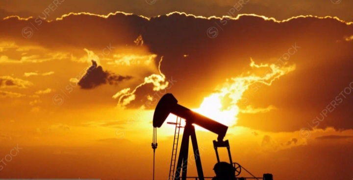
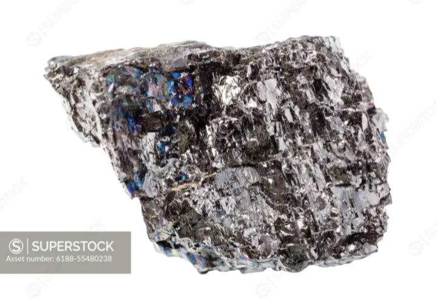
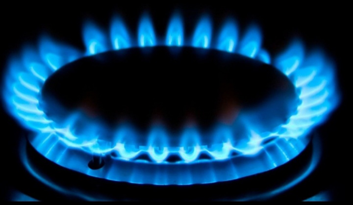

Combustíveis fósseis são como capsula do tempo subterrâneas. eles guardam energia solar capturada por: plantas e micro-organismos, há milhões de anos; e hoje agente acende essa energia.
O que são?São fontes de energia formados pela decomposição de matéria orgânica soterrada sob pressão e calor a milhões de anos os três principais são:

É um liquido escuro e expesso extraido do subsolo ou do fundo do mar ele é refinado e tranformado em:

É uma rocha rica em carbono, foi ultilizada como combustível na Revolução industrial. E ainda hoje é usada principalmente para gerar energia elétrica em termelétricas
-Gás natural
Um gás inflamavel, composto principalmente por Metano, ele é utilizado para
É o mais "limpo" dos três
Como eles funcionam?Todos liberam energia quando queimados. Essa queima libera calor, o calor movimenta turbinas, turbinas geram eletricidade. É basicamente transformar fogo em movimento, e movimento em energia elétrica
ProblemasQuando esse combustiveis são queimados eles liberam:
Além disso, são recursos não renovaveis. A natureza leva milhões de anos para produzir mais
Como eles se formam?Há milhões de anos, florestas gigantes e oceanos cheios de micro-organismos capturavam energia do sol pela fotossíntese. Quando essa plantas morriam: